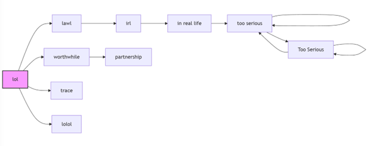
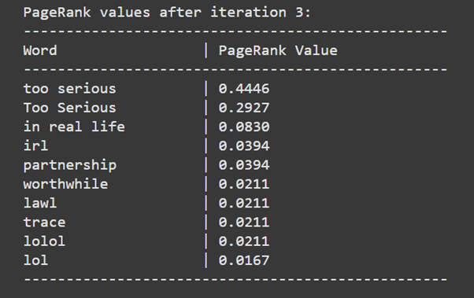

1. Urban Dictionary API: We fetch data from the Urban Dictionary API, and then parse the JSON results in order to add them into our local cache.
2. JSON Caching: We store fetched definitions (in urban_data.json) to avoid repeated calls to the API and speed up subsequent searches.
3. Splitting Queries by “or”: We added a feature where the user can get multiple definitions in one query by adding “or” between each query. For example: harry potter or john snow.
If the user does not add “or,” we treat the entire line as a single query. This approach allows bulk fetching of definitions in a single pass.
4. Custom Ranking Logic: Instead of a traditional TF-IDF or other ranking systems, we implemented a custom ranking formula:
score = (likes - dislikes) - 0.1 x (current_year - year_of_post).
5. Search for New Slangs: We can use an API to return 7 random definitions, call the API 10 times to get a total of 70 definitions, then return the newest terms with the highest score to the user.
6. Search Using words.txt: If we want to search in bulk, we create a file called words.txt. Each line may contain a query. The code reads the file line by line, fetches definitions for each query, and caches them.
Measured Time (25 seconds): Our queries took around 25 seconds to process all lines in words.txt.
Dependencies:
words.txt has many lines or if each line has multiple sub-queries split by “or,” each sub-query must be fetched individually from Urban Dictionary.urban_data.json, subsequent searches for the same term are instant. If no data is cached, we make more calls to the API.Possible Improvements:
1. Reading Input (words.txt): We read each line from words.txt. Each line may contain multiple sub-queries delimited by “or.”
If there is no “or,” it's just one query; if it has “or,” we split it into multiple sub-queries.
2. Cleaning & Normalizing Queries: We strip leading/trailing whitespace and remove double spaces.
3. Caching / Lookups (urban_data.json): For each sub-query (e.g., “john snow,” “harry potter”), we check if it exists in the JSON cache.
If not cached, we fetch from the Urban Dictionary API, process the definitions (calculating the custom score, censoring any bad words), and store them in the JSON file for future use.
4. Selecting Final Definitions: For each sub-query, we identify the top 10 highest-ranked definitions based on our custom formula.
5. User Prompt / Interactive Query: After processing words.txt, the program prompts the user for a new query. The same steps apply—split by “or,” check cache or fetch from API, then display the oldest/newest/highest-scoring definitions.
Hubs and Authorities Concept:
Yes, in principle each definition text can contain multiple [linked_term] references to other pages. If a particular definition references many other terms, that definition is a potential hub. A definition that many other pages link to (mention with [square bracket] references) could be considered an authority.
Example:
“harry potter (oldest definition)” references [wizard], [magic], [hogwarts]. So it's a potential hub. If “wizard,” “magic,” “hogwarts,” “voldemort,” etc. also contain references back to “harry potter,” then “harry potter” becomes a strong authority.
We did not use every definition for PageRank because it was not feasible. Instead, we took the words themselves that the user requested, plus the words linked inside each definition, forming a mini-graph of 10 interconnected nodes.
Below is an example graph showing how the user input “lol” expanded into various linked words:

After running our PageRank script for 3 iterations, these were the results:
PageRank values after iteration 3:
----------------------------------
Word | PageRank Value
----------------------------------
too serious | 0.4446
Too Serious | 0.2927
in real life | 0.0830
irl | 0.0394
partnership | 0.0394
worthwhile | 0.0211
lawl | 0.0211
trace | 0.0211
lolol | 0.0211
lol | 0.0167
We limited the code to only 10 words. You can see how “too serious” has the highest PageRank value due to the link structure in our example data.
We displayed the top 10 definitions (returned by the API) to two users, asking them to mark each definition as relevant (y) or not relevant (n), and recorded precision/recall.
User 1 Feedback:
=== Relevance Feedback ===
For each definition, enter 'y' if relevant, 'n' if not relevant.
Is definition #1 relevant? (y/n): y
Is definition #2 relevant? (y/n): y
Is definition #3 relevant? (y/n): y
Is definition #4 relevant? (y/n): n
Is definition #5 relevant? (y/n): n
Is definition #6 relevant? (y/n): n
Is definition #7 relevant? (y/n): y
Is definition #8 relevant? (y/n): n
Is definition #9 relevant? (y/n): n
Is definition #10 relevant? (y/n): n
=== Evaluation Metrics ===
User 1 - Precision: 0.40, Recall: 1.00
User 2 Feedback:

=== Relevance Feedback ===
Is definition #1 relevant? (y/n): y
Is definition #2 relevant? (y/n): n
Is definition #3 relevant? (y/n): y
Is definition #4 relevant? (y/n): y
Is definition #5 relevant? (y/n): n
Is definition #6 relevant? (y/n): n
Is definition #7 relevant? (y/n): y
Is definition #8 relevant? (y/n): y
Is definition #9 relevant? (y/n): n
Is definition #10 relevant? (y/n): y
=== Evaluation Metrics ===
User 2 - Precision: 0.60, Recall: 1.00
Observations: